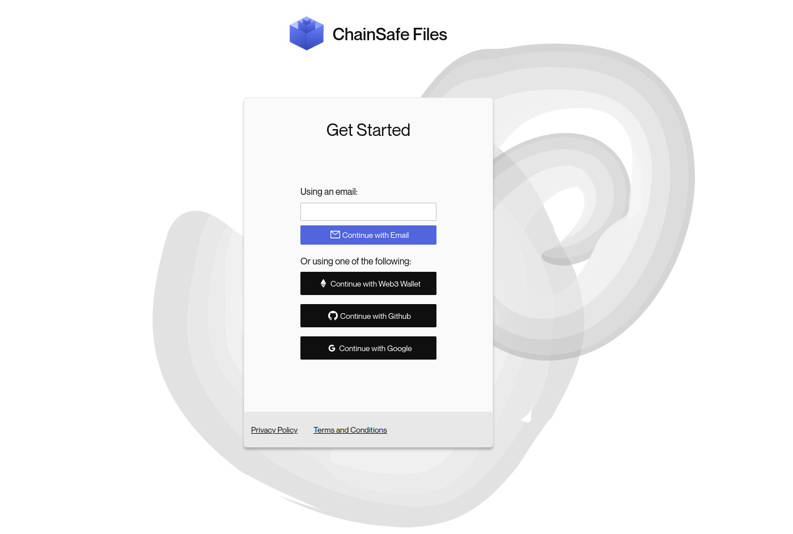

ChainSafe Files — Building Privacy-preserving Cloud Storage
This is a guest post from ChainSafe.
ChainSafe Files provides highly private, highly secure cloud storage that allows users to maintain full sovereignty over their data. Our product leverages IPFS and Filecoin to give users all the benefits of distributed storage and blockchain technology. Files abstracts away the complexities of these systems to deliver a simple, user-friendly experience. In this way, users can enjoy easy access to our data storage solution that is more private, more resilient, and more decentralized than traditional cloud storage options. Try it today!
ChainSafe Files is an online platform to store, view, and share files. Although it might look like it, it isn’t your typical cloud storage platform. ChainSafe Files was built and designed with user freedom and data privacy top of mind.
To deliver on our vision of better user autonomy and privacy, we came up with two principles to inform our approach: 1) Privacy. Files users should be the only ones able to read their data without fear of incursions on privacy; 2) Self-reliance. Instead of being locked into our app, users should be able to access their files even in the unlikely scenario where the Files platform becomes unavailable.
This article will walk through the most important parts of Files’ architecture, explaining how we strive to build a product that prioritizes its users as first-class citizens. We will go through:
- The decentralized login process, effectively preventing anyone but yourself from accessing the Files user interface
- How this gives you access to the tools that let you encrypt any data you store
- Finally, we will show how we leverage IPFS and Filecoin to make sure your data will always be available to you.
Decentralized login
When you visit a conventional web application for the first time, you generally need to sign up and then log in. You’ll then enter a login and password, then the platform’s backend will verify if the credentials match what you provided upon sign-up, and finally it will let you access your files.
Now, this platform is the gatekeeper. If conventional web applications have a backdoor, or if an admin is malicious, one could trivially gain access to your data. These backdoors could be introduced by a hacker, a government, or even by the platform itself.
Another common use case for an application’s user login is to use a single sign-on solution such as Google. They are convenient since they require just one click. They are mostly used as a single source of truth where a third-party (e.g., Google) can vouch that you are who you say you are because you are logged in on their platform.
All an application needs to do is to verify that the third-party signature is valid (e.g Google’s signature). Now, this means that in our example, Google is the gatekeeper, and you would have to trust them. If your Google account gets hacked, if Google itself gets hacked, or if an admin is malicious, they could issue a signature to vouch that someone is identified as you.
At ChainSafe Files, to prevent the need to trust a third-party, we have built an authentication flow using a decentralized login provider called tKey, by Torus. We have dedicated an article about it and shared in detail how it works, you can check it out here. The gist of it is that you no longer need to trust a single actor, be it Google, Github, or the ChainSafe Files’ team. You will require two factors to be authenticated:
- A password in case your first sign-in method gets compromised, a malicious actor would still not be able to login to Files on your behalf.

- To make it simpler, your browser will also be used as a second factor, so that if you use the same browser to log in to Files, you can sign into your account in a single click.
In this section, we went through the login flow of Files and explained how we are using a decentralized authentication system. Thanks to this, no single entity is storing user credentials, and you do not have to trust a single entity, be it the backend of Files or a third-party platform. Now that we are convinced that no single entity is gatekeeping access to your Files, let’s see how we make sure that you are the only one able to read your content.
Your files cannot be read by anyone but yourself
When you log in to ChainSafe Files using two factors, under the hood, you reconstruct a public/private key pair that is only known to you. We will call it the master key in this article. This master key only lives in your browser. It is reconstructed every time you log in to Files and deleted again when you end your browser session. Let’s see how it is used in practice and walk through what happens when you upload a document on Files.
Say you want to upload an image of a cat to ChainSafe Files. When you do this, the Files application will request an encryption key that is stored on Files’ backend. Of course, because it’s stored away from your computer, it’s not stored in plain text. It is encrypted with your master key (using AES-256). Only you can read this encryption key. Once you have it, the cat image you want to upload will be encrypted locally, in your browser, on your machine, and finally, it will be sent to Files’ backend.
Let’s take a short aside here to discuss how a website works. Technically, visiting a website in your browser means that you are downloading the website’s code from the internet, and executing it in your browser, locally. What happens in your browser isn’t necessarily shared with any server on the internet. What any website’s code does can be seen and verified. Also because Files is open-source, you don’t need to take our word for it, you can verify what is explained in this article!
Back to our cat image, remember what we said earlier: what happens in your browser locally isn’t necessarily shared on the internet. When the cat image reaches the Files’ backend, it’s already encrypted with this encryption key that only you have access to. As cute as it may be, no one can see that it’s a cat image!
As you can see, we’ve built Files with a privacy-by-design approach. We’ve made it as hard as we can to prevent someone from impersonating you when you log in, while not having to trust a single third-party — not even ChainSafe. Additionally, thanks to powerful encryption, no one but you can read the content of your files.
Your files can be accessed even if the Files interface and infrastructure is down
One very important aspect of building an open and decentralized platform is data retrieval. It sounds awesome that no one but you can log in to the platform and read your files, but what if the platform is down, or worse censoring you? This is where the decentralized storage network of IPFS and Filecoin come into play. While there are high chances that readers of this article already know about IPFS and Filecoin, here is a link to learn more about them.
In a nutshell, IPFS is a network of computers (called nodes) that store files. A node can “pin” your files, meaning it will keep a copy of it ready for distribution in case it is asked to. The Files’ backend is built on top of ChainSafe Storage, and any file that is uploaded to Files is also pinned by a node on our infrastructure. Each file has an IPFS content identifier (CID) which can be seen on the interface when you click on “info”.
This way, you can retrieve your files without using the Files user interface. Now, as explained before, those files are encrypted, and you would need to decrypt them if you want to read them. We have created a simple cli tool to download and decrypt your files from IPFS without using the Files interface.
While it doesn’t cost anything to retrieve a file from IPFS, nodes that are a part of the network have no incentive to store files. Therefore, it can be said that there is no guarantee that your files will always be available when you need them. This is where Filecoin will help. Filecoin is an incentive layer on top of IPFS. In simple words, it means you can pay specific nodes to make sure they will keep your file around. This guarantee is enforced by the Filecoin protocol so that you can be sure to be able to access your files when you want. Unlike IPFS though, it is not free to retrieve your files. ChainSafe Files is therefore using IPFS as a caching layer, to be able to show your files right away when you need them, but we also store them using Filecoin for long-term storage, and redundancy.
Placing users at the center, with a privacy preserving mindset
Summing it up, you are the only one able to log in to the Files user interface to retrieve your master key. Any file you upload is encrypted and is only readable by yourself. Your files are stored on a decentralized network that lets you access them even if the ChainSafe Files infrastructure isn’t available anymore. Is there anything more one could wish? The answer is yes!
Users of a platform leave a lot of metadata behind, which can tell a lot about them. Let’s take WhatsApp as an example. While the content of the messages is encrypted, the information collected about who you are sending messages to, how often, at what time of the day, etc.. can tell a lot about yourself, your habits, your and your social circle. Now, mix this data with other sources such as what other apps are installed on your phone, which Facebook account you may be associated with, and you get the perfect cocktail for being targeted.
Any personal data is sensitive, and must be safeguarded so that they should not land in malicious hands. Better yet, they should not even be collected in the first place.
We at ChainSafe Files take data privacy very seriously and aim at providing the best experience on the Files platform while protecting our users from such threats. We are not in the data collection business and we will make sure that user usage information is not shared with third parties and never sold.
We are conducting user interviews!
Help shape the future of Files by scheduling a user interview with our product manager Colin Schwarz. The user interviews are short 15 minute calls that aim to gleam insights into your usage of our product and how we can better serve you! Join our Files Task Force Telegram group chat or schedule a call today.
Get involved
To help us make Files better, we rely on user feedback and we would love to hear your thoughts. What do you like about Files? Is there anything annoying you? What feature would you like to see in the future? Tell us what you think in our Files power user Telegram group, or on GitHub, Twitter, Discord.
Want to work with ChainSafe? Come join us! Check out the careers section of our website with our open positions, and get in touch with us at careers@chainsafe.io if you are interested!